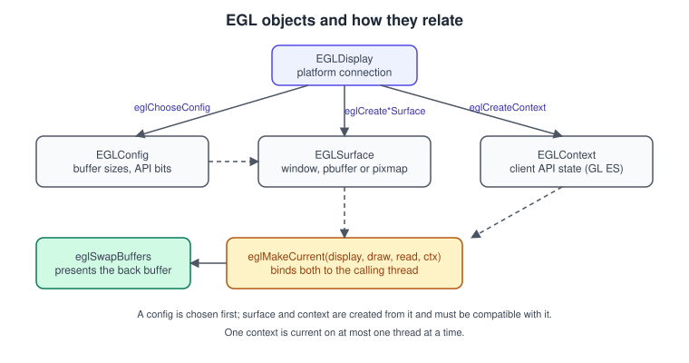
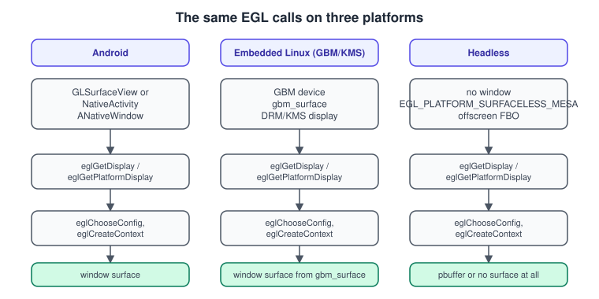

EGL: Displays, Configs, Surfaces and Contexts
|
This content was generated with the assistance of AI and should be verified against the official documentation before being relied on in production. |
OpenGL itself never says how to get a window, a drawable surface or a context. That glue is supplied by a platform layer: WGL on Windows, GLX on X11, CGL on macOS and EGL almost everywhere else. EGL is the Khronos Native Platform Interface. It is the only way to obtain an OpenGL ES context on Android and on most embedded Linux systems, it works on desktop Linux with Wayland, X11 or no display server at all, and it can also create desktop OpenGL contexts. This page walks through the four EGL object types, the exact order of calls, the configuration attributes that matter, the swap interval, and the three setups you meet in practice: a window on Android, a GBM/KMS display on embedded Linux and a headless offscreen context for tests and servers.
The facts were checked in November 2026. The version documented is EGL 1.5 (the current specification at the Khronos registry), used with OpenGL ES 3.2 (GLSL ES 3.20) and, where noted, desktop OpenGL 4.6. EGL runs on Android (the platform exposes EGL 1.4 or later; EGL 1.5 features need a driver that implements them), Linux with Mesa or vendor drivers, Windows and macOS through ANGLE, and embedded boards. The general topic of windows and loaders is in Contexts, Windows and Loaders; the first program that uses a context is Hello Triangle.
What EGL does and does not do
EGL manages four things and nothing else:
-
the connection to the platform’s display (the display),
-
the description of what buffers a drawable can have (the config),
-
the drawable itself, either a native window, an off-screen pixel buffer or a native pixmap (the surface),
-
the rendering context that holds the API state (the context).
It does not load OpenGL ES functions (you either link directly against libGLESv2 or fetch pointers with
eglGetProcAddress; see Contexts, Windows and Loaders), it does not
create windows, and it does not handle input. The native window is created by Android, Wayland, GBM or any other platform
mechanism, and handed to EGL.
The four objects and their order

The lifecycle is always the same, whatever the platform.
A step-by-step reading of the diagram:
-
Get a display.
eglGetDisplay(EGL_DEFAULT_DISPLAY)returns the default display of the platform. EGL 1.5 addseglGetPlatformDisplay, which takes an explicit platform (EGL_PLATFORM_GBM_KHR,EGL_PLATFORM_WAYLAND_KHR,EGL_PLATFORM_X11_KHR,EGL_PLATFORM_ANDROID_KHR,EGL_PLATFORM_SURFACELESS_MESA, …) and the matching native display. Prefer it whenever you can, becauseeglGetDisplayhas to guess the platform from the type of the native handle. -
Initialise.
eglInitializeloads the driver and returns the EGL version supported (major and minor). -
Bind an API.
eglBindAPI(EGL_OPENGL_ES_API)selects OpenGL ES for this thread;EGL_OPENGL_APIselects desktop OpenGL andEGL_OPENVG_APIselects OpenVG. The default is OpenGL ES. -
Choose a config (
eglChooseConfig), which depends on the API and the surface type you need. -
Create the context (
eglCreateContext) and the surface (eglCreateWindowSurface,eglCreatePbufferSurface, or the 1.5 functionseglCreatePlatformWindowSurfaceand friends). -
Make them current (
eglMakeCurrent) on the thread that will issue the GL calls. -
Render and swap with
eglSwapBuffers. -
Tear down in reverse: release the current context, destroy the surface and the context, then
eglTerminate.
A context can be current on one thread at a time, and a thread has at most one current context per bound API. Moving rendering to
another thread means making the context not current on the first thread (eglMakeCurrent with EGL_NO_CONTEXT) before making it
current on the second.
Configs: describing the buffers
An EGLConfig is an immutable description of a framebuffer layout that the driver supports. You do not construct one; you ask for
the ones that satisfy a list of minimum requirements and take the best match.
| Attribute | Meaning | Typical value |
|---|---|---|
|
Bit mask of the client APIs the config can render with: |
|
|
Bit mask of surface kinds: |
|
|
Minimum bits per colour channel |
8, 8, 8, 8 (or 0 for alpha when the surface is opaque) |
|
Minimum depth buffer bits for the default framebuffer |
24 (0 if you render to your own framebuffer objects) |
|
Minimum stencil bits |
8, or 0 |
|
Multisampling of the default framebuffer |
1 and 4, or 0 and 0 |
|
|
|
|
The native pixel format identifier, needed to match the config to an Android window format or a GBM format |
read from the config, never set |
eglChooseConfig returns the matching configs sorted by the rules of the specification (for example, configs with caveats later,
larger colour buffers earlier). An attribute you do not mention keeps its default and the minimum semantics for sizes, so asking for
8 bits of red can return a config with 10. Two common mistakes follow from that:
-
Asking for
EGL_DEPTH_SIZEof 24 and receiving 32 (or 16 on weak hardware). Read the value back witheglGetConfigAttrib. -
Requesting
EGL_ALPHA_SIZEof 8 on Android and ending with a window whose colour format mismatchesEGL_NATIVE_VISUAL_ID; see the Android section below.
Always check the return value and the number of configs, and keep the first config that works. A robust program asks for the ideal configuration, then falls back to a weaker one (no multisampling, then no stencil).
Selecting the OpenGL ES version
A context requests its ES version when it is created. In EGL 1.5 the attributes are:
| Attribute | Value | Notes |
|---|---|---|
|
2, 3 |
Core in EGL 1.5 (the older |
|
0, 1, 2 |
ES 3.1 and 3.2 are requested by major 3 and minor 1 or 2 |
|
|
Creates a debug context (enables the |
|
|
Desktop OpenGL only ( |
|
|
Robust buffer access; requires the matching EGL and GL robustness support |
|
|
Extension ( |
The result is that an ES 3.x request returns a context of at least the requested version; glGetString(GL_VERSION) and
glGetIntegerv(GL_MAJOR_VERSION, ...) tell you what you actually got. An application that wants ES 3.2 but can run on 3.0
should request the highest version first and fall back, instead of requesting 3.0 and hoping that the driver gives more.
Surfaces
| Surface | Created with | Used for |
|---|---|---|
Window surface |
|
Putting pixels on screen. The native window must have been created with a pixel format that matches the config. |
Pbuffer surface |
|
Off-screen rendering where no window exists, for example tests on a server. Some drivers do not support pbuffers; check |
Pixmap surface |
|
Rendering to a native bitmap. Rarely supported and rarely useful today. |
No surface |
|
Rendering entirely into framebuffer objects, with no default framebuffer. This is the standard way to do compute and headless rendering. |
A window surface holds a front and a back buffer in normal usage; eglSwapBuffers(display, surface) posts the back buffer. A
pbuffer is never swapped.
Swapping and the swap interval
eglSwapBuffers presents the contents of the back buffer. The interval between swaps, in video frames, is set by
eglSwapInterval(display, interval) and applies to the surface that is current on the calling thread (EGL spec: the draw surface
of the current context).
-
An interval of 1 is the default and means "wait for one vertical blank before swapping" (vsync on).
-
An interval of 0 removes the wait: the swap returns without synchronising with the display, which can tear on some platforms.
-
Larger values are clamped to the range given by the config attributes
EGL_MIN_SWAP_INTERVALandEGL_MAX_SWAP_INTERVAL. -
Some drivers (Android surfaces composited by SurfaceFlinger among them) ignore the call, because the compositor decides when the frame goes on screen. On Android, use
Choreographer(orAChoreographerin the NDK) to schedule frames andeglPresentationTimeANDROID(extensionEGL_ANDROID_presentation_time) to give the compositor a target time.
A frame that takes more than 16.6 ms at 60 Hz misses the vertical blank and the next swap waits for the following one, so the frame rate drops to 30 per second. See Game Loop and Frame Timing for the theory and Performance and Profiling for how to measure it.
EGL 1.5: what changed
EGL 1.5 (published in 2014) brought several features that were earlier extensions into the core:
-
the platform-aware display and surface creation calls (
eglGetPlatformDisplay,eglCreatePlatformWindowSurface,eglCreatePlatformPixmapSurface), -
the context-creation attributes for versions, profiles, debug and robustness (
EGL_CONTEXT_MAJOR_VERSIONand the others above), -
the
EGL_OPENGL_ES3_BITrenderable type bit, and sRGB colour space for window surfaces (EGL_GL_COLORSPACE,EGL_GL_COLORSPACE_SRGB,EGL_GL_COLORSPACE_LINEAR), -
sync objects (
eglCreateSync,eglClientWaitSync,eglWaitSync,eglDestroySync) and image objects (eglCreateImage) for sharing buffers between APIs and processes, which replace the olderEGL_KHR_fence_syncandEGL_KHR_image_baseextensions.
Older guides describe EGL 1.3 or 1.4: they show eglGetDisplay only, set the ES version with EGL_CONTEXT_CLIENT_VERSION and
a config that asks for EGL_OPENGL_ES2_BIT. Those programs still run, and the table above notes which names changed.
Example 1: headless OpenGL ES 3.0 context on Linux
This C program creates an off-screen ES 3.0 context with no window, clears a framebuffer object to blue and reads one pixel back.
It runs on a server, in CI with Mesa’s software rasteriser (llvmpipe, see
Embedded Systems and Linux) and on a desktop. It uses the
EGL_MESA_platform_surfaceless platform, falling back to the default display.
// build: cc headless.c -o headless -lEGL -lGLESv2
#include <EGL/egl.h>
#include <EGL/eglext.h>
#include <GLES3/gl3.h>
#include <stdio.h>
#include <stdlib.h>
#include <string.h>
static void die(const char *what) {
fprintf(stderr, "%s failed (EGL error 0x%x)\n", what, eglGetError());
exit(1);
}
int main(void) {
// 1. Display. Use the platform call when the client extension is present.
EGLDisplay dpy = EGL_NO_DISPLAY;
const char *clientExt = eglQueryString(EGL_NO_DISPLAY, EGL_EXTENSIONS);
if (clientExt && strstr(clientExt, "EGL_MESA_platform_surfaceless")) {
PFNEGLGETPLATFORMDISPLAYEXTPROC getPlatformDisplay =
(PFNEGLGETPLATFORMDISPLAYEXTPROC)eglGetProcAddress("eglGetPlatformDisplayEXT");
if (getPlatformDisplay)
dpy = getPlatformDisplay(EGL_PLATFORM_SURFACELESS_MESA, EGL_DEFAULT_DISPLAY, NULL);
}
if (dpy == EGL_NO_DISPLAY) dpy = eglGetDisplay(EGL_DEFAULT_DISPLAY);
if (dpy == EGL_NO_DISPLAY) die("eglGetDisplay");
// 2. Initialise.
EGLint major = 0, minor = 0;
if (!eglInitialize(dpy, &major, &minor)) die("eglInitialize");
printf("EGL %d.%d, vendor %s\n", major, minor, eglQueryString(dpy, EGL_VENDOR));
// 3. API and config. A pbuffer-capable config; we will not use it for drawing.
if (!eglBindAPI(EGL_OPENGL_ES_API)) die("eglBindAPI");
const EGLint cfgAttribs[] = {
EGL_RENDERABLE_TYPE, EGL_OPENGL_ES3_BIT,
EGL_SURFACE_TYPE, EGL_PBUFFER_BIT,
EGL_RED_SIZE, 8, EGL_GREEN_SIZE, 8, EGL_BLUE_SIZE, 8, EGL_ALPHA_SIZE, 8,
EGL_NONE
};
EGLConfig cfg;
EGLint count = 0;
if (!eglChooseConfig(dpy, cfgAttribs, &cfg, 1, &count) || count == 0) die("eglChooseConfig");
// 4. Context for OpenGL ES 3.0.
const EGLint ctxAttribs[] = {
EGL_CONTEXT_MAJOR_VERSION, 3,
EGL_CONTEXT_MINOR_VERSION, 0,
EGL_NONE
};
EGLContext ctx = eglCreateContext(dpy, cfg, EGL_NO_CONTEXT, ctxAttribs);
if (ctx == EGL_NO_CONTEXT) die("eglCreateContext");
// 5. Make it current without a surface; everything goes to FBOs.
if (!eglMakeCurrent(dpy, EGL_NO_SURFACE, EGL_NO_SURFACE, ctx)) {
// Drivers without surfaceless support need a 1 x 1 pbuffer.
const EGLint pbAttribs[] = { EGL_WIDTH, 1, EGL_HEIGHT, 1, EGL_NONE };
EGLSurface pb = eglCreatePbufferSurface(dpy, cfg, pbAttribs);
if (pb == EGL_NO_SURFACE || !eglMakeCurrent(dpy, pb, pb, ctx)) die("eglMakeCurrent");
}
printf("GL_VERSION: %s\n", glGetString(GL_VERSION));
// 6. Render to a 64 x 64 texture through an FBO and read it back.
GLuint tex, fbo;
glGenTextures(1, &tex);
glBindTexture(GL_TEXTURE_2D, tex);
glTexStorage2D(GL_TEXTURE_2D, 1, GL_RGBA8, 64, 64);
glGenFramebuffers(1, &fbo);
glBindFramebuffer(GL_FRAMEBUFFER, fbo);
glFramebufferTexture2D(GL_FRAMEBUFFER, GL_COLOR_ATTACHMENT0, GL_TEXTURE_2D, tex, 0);
if (glCheckFramebufferStatus(GL_FRAMEBUFFER) != GL_FRAMEBUFFER_COMPLETE) die("framebuffer");
glClearColor(0.0f, 0.0f, 1.0f, 1.0f);
glClear(GL_COLOR_BUFFER_BIT);
unsigned char px[4];
glReadPixels(32, 32, 1, 1, GL_RGBA, GL_UNSIGNED_BYTE, px);
printf("pixel = %u %u %u %u\n", px[0], px[1], px[2], px[3]);
// 7. Tear down in reverse order.
glDeleteFramebuffers(1, &fbo);
glDeleteTextures(1, &tex);
eglMakeCurrent(dpy, EGL_NO_SURFACE, EGL_NO_SURFACE, EGL_NO_CONTEXT);
eglDestroyContext(dpy, ctx);
eglTerminate(dpy);
return 0;
}Source: EGL reference: eglCreateContext
The expected output ends with pixel = 0 0 255 255. The error path prints the hexadecimal value of eglGetError, whose constants (EGL_BAD_CONFIG,
EGL_BAD_ALLOC, EGL_BAD_MATCH, …) are listed on the reference page for each function.
Example 2: a window on Android with GLSurfaceView
On Android you rarely call EGL directly: GLSurfaceView creates the display, config, surface and context, owns the render thread and
calls your Renderer on it. The lifecycle details are on
OpenGL ES on Android; the UI integration is on
Graphics, Canvas and OpenGL ES. The key EGL knobs are exposed as follows:
import android.content.Context
import android.opengl.GLSurfaceView
import javax.microedition.khronos.egl.EGL10
import javax.microedition.khronos.egl.EGLConfig
import javax.microedition.khronos.egl.EGLDisplay
class BookshelfView(context: Context) : GLSurfaceView(context) {
init {
// Request an ES 3.x context. The default would be ES 1.x/2.x compatible.
setEGLContextClientVersion(3)
// RGBA 8888, 24-bit depth, 8-bit stencil, no multisampling.
setEGLConfigChooser(8, 8, 8, 8, 24, 8)
// Keep the EGL context across onPause()/onResume() when the device can.
preserveEGLContextOnPause = true
setRenderer(BookshelfRenderer())
renderMode = RENDERMODE_CONTINUOUSLY
}
}
// Only needed when you want full control: a custom chooser that prefers 4x MSAA
// and falls back to a plain config.
class MsaaConfigChooser : GLSurfaceView.EGLConfigChooser {
override fun chooseConfig(egl: EGL10, display: EGLDisplay): EGLConfig {
val attribs = intArrayOf(
EGL10.EGL_RENDERABLE_TYPE, 0x40, // EGL_OPENGL_ES3_BIT
EGL10.EGL_RED_SIZE, 8, EGL10.EGL_GREEN_SIZE, 8, EGL10.EGL_BLUE_SIZE, 8,
EGL10.EGL_DEPTH_SIZE, 24,
EGL10.EGL_SAMPLE_BUFFERS, 1, EGL10.EGL_SAMPLES, 4,
EGL10.EGL_NONE
)
val configs = arrayOfNulls<EGLConfig>(1)
val count = IntArray(1)
if (egl.eglChooseConfig(display, attribs, configs, 1, count) && count[0] > 0) {
return configs[0]!!
}
// Fall back to no multisampling.
attribs[attribs.indexOf(EGL10.EGL_SAMPLE_BUFFERS) + 1] = 0
attribs[attribs.indexOf(EGL10.EGL_SAMPLES) + 1] = 0
egl.eglChooseConfig(display, attribs, configs, 1, count)
return configs[0]!!
}
}Three Android-specific points deserve attention:
-
The
glEsVersionthat the application requires is declared in the manifest, and the device will not install an app that needs a newer version than it provides. Runtime context creation can still fail on an emulator or an unusual driver, so check for it. -
The window’s pixel format must match the config’s native visual (
EGL_NATIVE_VISUAL_ID).GLSurfaceViewhandles this; withNativeActivityor aSurfaceViewplus raw EGL you callANativeWindow_setBuffersGeometrywith that visual id before creating the window surface. -
A surface becomes invalid when the activity pauses or the window is destroyed; the context may be lost as well. Rebuild everything that was created with the old context (textures, buffers, programs) in
onSurfaceCreated.
Example 3: GBM and KMS on embedded Linux
A kiosk, a car dashboard or a Raspberry Pi in console mode has no window system at all. The pieces are Linux’s DRM/KMS (the kernel interface to display hardware), GBM (Generic Buffer Management, which allocates scan-out-capable buffers) and EGL on top of GBM. The outline, with error handling elided for space, is:
// build: cc kms.c -o kms -lEGL -lGLESv2 -lgbm -ldrm $(pkg-config --cflags libdrm)
#include <fcntl.h>
#include <gbm.h>
#include <xf86drm.h>
#include <xf86drmMode.h>
#include <EGL/egl.h>
#include <EGL/eglext.h>
int fd = open("/dev/dri/card0", O_RDWR | O_CLOEXEC); // the GPU's DRM node
struct gbm_device *gbm = gbm_create_device(fd);
PFNEGLGETPLATFORMDISPLAYEXTPROC getPlatformDisplay =
(PFNEGLGETPLATFORMDISPLAYEXTPROC)eglGetProcAddress("eglGetPlatformDisplayEXT");
EGLDisplay dpy = getPlatformDisplay(EGL_PLATFORM_GBM_KHR, gbm, NULL);
eglInitialize(dpy, NULL, NULL);
eglBindAPI(EGL_OPENGL_ES_API);
// Choose a config whose native visual is a format GBM can scan out, e.g. XRGB8888.
// (Loop over eglChooseConfig results and compare EGL_NATIVE_VISUAL_ID with GBM_FORMAT_XRGB8888.)
EGLConfig cfg = /* the matching config */ 0;
drmModeRes *res = drmModeGetResources(fd);
// ... pick a connector and the preferred mode (drmModeGetConnector) ...
uint32_t width = 1920, height = 1080;
struct gbm_surface *gs = gbm_surface_create(gbm, width, height, GBM_FORMAT_XRGB8888,
GBM_BO_USE_SCANOUT | GBM_BO_USE_RENDERING);
EGLSurface surf = eglCreatePlatformWindowSurface(dpy, cfg, gs, NULL);
const EGLint ctxAttribs[] = { EGL_CONTEXT_MAJOR_VERSION, 3, EGL_NONE };
EGLContext ctx = eglCreateContext(dpy, cfg, EGL_NO_CONTEXT, ctxAttribs);
eglMakeCurrent(dpy, surf, surf, ctx);
// Per frame:
// draw with OpenGL ES, eglSwapBuffers(dpy, surf);
// struct gbm_bo *bo = gbm_surface_lock_front_buffer(gs);
// turn the bo into a DRM framebuffer (drmModeAddFB2) and flip with drmModePageFlip;
// wait for the page-flip event, then gbm_surface_release_buffer(gs, bo).The full loop with the page-flip event handling is the subject of Embedded Systems and Linux.

Common mistakes
-
Choosing a config and then forgetting to compare against the native window format. On Android and GBM the colour format of the window must equal the config’s
EGL_NATIVE_VISUAL_ID. A mismatch yieldsEGL_BAD_MATCHor a black window. -
Calling GL functions with no current context. Every GL call on a thread without a current context is undefined and usually a crash. Check the return value of
eglMakeCurrent. -
Using the context from two threads. Either make it current on one thread, or create shared contexts (the third argument of
eglCreateContext) so that textures and buffers are visible to both. -
Not terminating on shutdown. Always release the context (
eglMakeCurrentwithEGL_NO_CONTEXT), destroy the surface and context, and only then calleglTerminate, otherwise resources can leak on mobile drivers. -
Reading the ES version only from the request. The driver can return a newer minor version than you asked for; query it.
-
Relying on
eglSwapInterval(0)on Android. The compositor controls presentation. Measure frame times instead. -
Treating
eglGetErroras a log. It returns the error from the last EGL call on the calling thread and resets it. Call it right after the failing call.
Where older material is outdated
| Older material says | Today |
|---|---|
Use |
EGL 1.5 adds platform display calls and version attributes; the old forms still work. Request ES 3.x with the major and minor attributes. |
ES 2.0 is the baseline on Android |
ES 3.0 needs Android API 18, 3.1 needs API 21 and 3.2 needs API 24; the manifest records the requirement. |
Run on an emulator with a desktop ES 2.0 library on Windows |
Use the Android emulator with host GPU acceleration, or ANGLE as an ES implementation on Windows, macOS and Linux. |
EGL is for phones; desktop uses GLX or WGL |
EGL also runs on desktop Linux (Mesa, Wayland, headless) and on Windows through ANGLE, and it can create desktop OpenGL contexts. |
References
-
EGL registry and specifications: https://registry.khronos.org/EGL/
-
EGL 1.5 specification: https://registry.khronos.org/EGL/specs/eglspec.1.5.pdf
-
EGL reference pages: https://registry.khronos.org/EGL/sdk/docs/man/html/
-
EGL extensions registry: https://registry.khronos.org/EGL/extensions/
-
Android GLSurfaceView reference: https://developer.android.com/reference/android/opengl/GLSurfaceView
-
Android OpenGL ES guide: https://developer.android.com/develop/ui/views/graphics/opengl/about-opengl
-
Mesa EGL documentation: https://docs.mesa3d.org/egl.html
-
OpenGL ES 2.0 Programming Guide (publisher page): https://www.informit.com/store/opengl-es-2.0-programming-guide-9780321502797
-
OpenGL ES 3.0 Programming Guide (publisher page): https://www.informit.com/store/opengl-es-3.0-programming-guide-9780321933881